Chapter 26 Principal Stratification
Parts II–V of this book focus on the causal effects of a treatment on an outcome, possibly adjusting for some observed pretreatment covariates. Many applications also have some post-treatment variable  which happens after the treatment and is related to the outcome. An important question is how to use the post-treatment variable appropriately. I will start with several motivating examples and then introduce Frangakis and Rubin, (2002)’s formulation of this problem based on potential outcomes.
which happens after the treatment and is related to the outcome. An important question is how to use the post-treatment variable appropriately. I will start with several motivating examples and then introduce Frangakis and Rubin, (2002)’s formulation of this problem based on potential outcomes.
132 Motivating Examples
Example 26.1 (noncompliance)
In randomized experiments with noncompliance, we can use to represent the treatment received, which is affected by the treatment assignment  and affects the outcome
and affects the outcome  .
In this example, has the same meaning as
.
In this example, has the same meaning as  in Chapter 21.
in Chapter 21.
Example 26.2 (truncation by death)
In randomized experiments to patients with severe diseases, some patients may die before the measurement of the outcome , e.g., the quality of life. The post-treatment variable in this example is the binary indicator of the survival status.
Example 26.3 (unemployment)
In job training programs, units are randomly assigned to treatment and control groups, and report their employment status and wage . Then the post-treatment variable is the binary indicator of the employment status .
Example 26.4 (surrogate endpoint)
In clinical trials, the outcomes of interest (e.g., 30 years of survival) require a long and costly follow-up. Practitioners instead collect data on some other variables early in the follow-up that are easy to measure. These variables are called the “surrogate endpoints.” A concrete example is from clinical trials on HIV patients, where the candidate surrogate endpoint is the CD4 cell count (recall that CD4 cells are white blood cells that fight infection).
Examples 26.1–26.4 above have the similarity that a variable occurs after the treatment and is related to the outcome. It is possible that is on the causal pathway from to . Figure 42(a) illustrates this mechanism. Example 26.1 corresponds to Figure 42(a). It is also possible that is not on the causal pathway from to . Figure 42(b) illustrates this mechanism. Examples 26.2 and 26.3 correspond to Figure 42(b). Example 26.4 can correspond to Figure 42(a) or (b), depending on the choice of the surrogate endpoint.
is on the causal pathway from to , with randomized and  representing unmeasured confounding is not on the causal pathway from to , with randomized and representing unmeasured confounding
representing unmeasured confounding is not on the causal pathway from to , with randomized and representing unmeasured confoundingIn practice, the underlying causal diagrams can be much more complex than those in Figure 42. This chapter follows Frangakis and Rubin, (2002)’s formulation which does not assume the underlying causal diagrams.
133 The Problem of Conditioning on the Post-Treatment Variable
A naive method to deal with the post-treatment variable is to condition on its observed value as if it were a pretreatment covariate. However, is fundamentally different from  , because is affected by the treatment in general whereas is not. It is also a “rule of thumb” that data analyzers should not condition on any post-treatment variables in evaluating the average causal effect of the treatment on the outcome (Cochran,, 1957; Rosenbaum,, 1984). Based on potential outcomes, Frangakis and Rubin, (2002) gave the following insightful explanation.
, because is affected by the treatment in general whereas is not. It is also a “rule of thumb” that data analyzers should not condition on any post-treatment variables in evaluating the average causal effect of the treatment on the outcome (Cochran,, 1957; Rosenbaum,, 1984). Based on potential outcomes, Frangakis and Rubin, (2002) gave the following insightful explanation.
For simplicity, we focus on the CRE in this chapter.
Assumption 26.1 (CRE with an intermediate variable)
We have
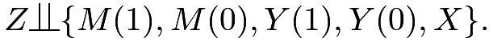 |
Conditioning on
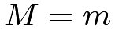
, we compare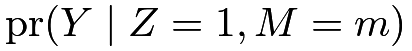 |
(132) |
and
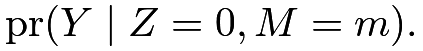 |
(133) |
This comparison seems intuitive because it measures the difference in the outcome distributions in the treated and control groups given the same value of the post-treatment variable. When is a pre-treatment covariate, this comparison yields a reasonable subgroup effect. However, when is a post-treatment variable, the interpretation of this comparison is problematic. Under Assumption 26.1, we can re-write the probabilities in (132) and (133) as
 |
 |
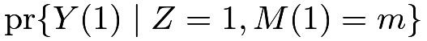 |
||
|
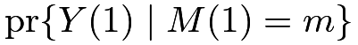 |
and
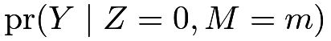 |
|
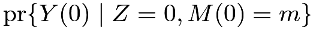 |
||
|
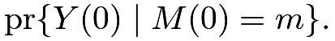 |
Therefore, under CRE, comparing (132) and (133) is equivalent to comparing the distributions of
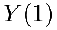
and for different subsets of units because the units with
for different subsets of units because the units with 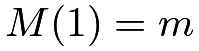
are different from the units with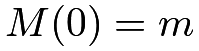
if the affects . Consequently, the comparison conditioning on does not have a causal interpretation in general unless 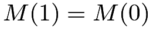
.51Revisit Example 26.1. Comparing
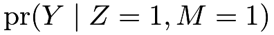
and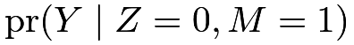
is equivalent to comparing the treated potential outcomes for compliers and always-takers with the control potential outcomes for always-takers, under the monotonicity assumption that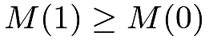
. Part 3 of Problem 22.8 has pointed out the drawbacks of this analysis.Revisit Example 26.2. If the treatment improves the survival status, the treatment can save more weak patients than the control. In this case, units with
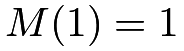
are weaker than units with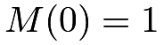
, so the naive comparison gives biased results that are in favor of the control.134 Conditioning on the Potential Values of the Post-Treatment Variable
Frangakis and Rubin, (2002) proposed to condition on the joint potential value of the post-treatment variable
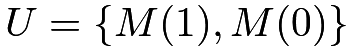
and compare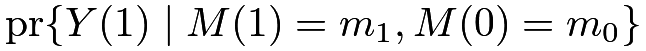 |
and
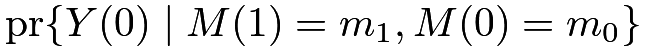 |
for some
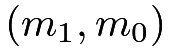
. This is a comparison of the potential outcomes under treatment and control for the same subset of units with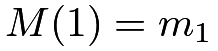
and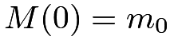
. Frangakis and Rubin, (2002) called this strategy principal stratification, viewing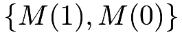
as a pre-treatment covariate. Based on this idea, we can define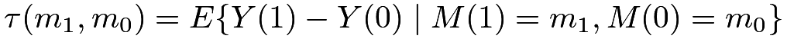 |
as the principal stratification average causal effect for the subgroup with
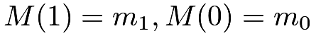
. For a binary, we have four subgroups
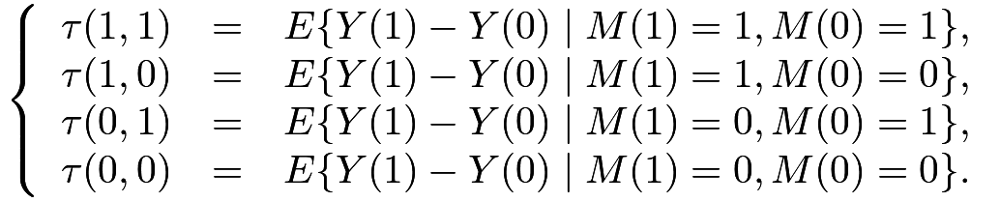 |
(134) |
Since is unaffected by the treatment, it is a covariate so
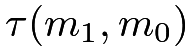
is a subgroup causal effect. For subgroups with , the treatment does not change the intermediate variable, so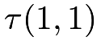
and measure the dissociative effects.
For other subgroups with
measure the dissociative effects.
For other subgroups with 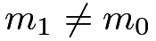
, the principal stratification average causal effects measure the associative effects. The terminology is from Frangakis and Rubin, (2002), which does not assume that is on the causal pathway from to . When we have Figure 42(a), we can interpret the dissociative effects as direct effects of on that act independent of , although we cannot simply interpret the associative effects as direct or indirect effects of on .
Example 26.1 (noncompliance)
With noncompliance, (134) consists of the average causal effects for always takers, compliers, defiers, and never takers (Imbens and Angrist,, 1994; Angrist et al.,, 1996).
Example 26.2 (truncation by death)
Because the outcome is well-defined only if the patient survives, three subgroup causal effects in (134) are not meaningful, and the only well-defined subgroup effect is
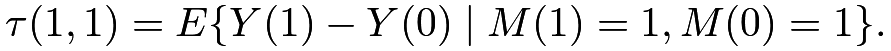 |
(135) |
It is called the survivor average causal effect (Rubin, 2006a, ). It is the average causal effect of the treatment on the outcome for those units who survive regardless of the treatment status.
Example 26.3 (unemployment)
The unemployment problem is isomorphic to the truncation-by-death problem because the wage is well-defined only if the unit is employed in the first place. Therefore, the only well-defined subgroup effect is (135), the employed average causal effect. Previously, Heckman, (1979) proposed a model, now called the Heckman Selection Model, to deal with unemployment in modeling the wage, viewing the wages of those unemployed as missing values52. However, Zhang and Rubin, (2003) and Zhang et al., (2009) argued that is a more meaningful quantity under the potential outcomes framework.
Example 26.4 (surrogate endpoint)
Intuitively, we want to assess the effect of the treatment on the outcome via the effect of the treatment on the surrogate endpoint. Therefore, a good surrogate endpoint should satisfy two conditions: first, if the treatment does not affect the surrogate, then it does not affect the outcome either; second, if the treatment affects the surrogate, then it affects the outcome too. The first condition is called the “causal necessity” by Frangakis and Rubin, (2002), and the second condition is called the “causal sufficiency” by Gilbert and Hudgens, (2008). Based on (134) for a binary surrogate endpoint, causal necessity requires that and 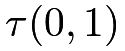 are zero, and causal sufficiency requires that  and
and
135 Statistical Inference and Its Difficulty
In Example 26.1, if we have randomization, monotonicity, and exclusion restriction, then we can identify the complier average causal effect . This is the key result derived in Chapter 21.
However, in other examples, we cannot impose the exclusion restriction assumption. For instance, is the main parameter of interest in Examples 26.2 and 26.3, and and are both of interest in Example 26.4. Without the exclusion restriction assumption, it is very challenging to identify the principal stratification average causal effect. Sometimes, we cannot even impose the monotonicity assumption, and thus cannot identify the proportions of the latent strata in the first place.
135.1 Special case: truncation by death with binary outcome
I use the simple setting with a binary treatment, binary survival status, and binary outcome to illustrate the idea and especially the difficulty of statistical inference based on principal stratification.
In addition to Assumption 26.1, we impose the monotonicity.
Assumption 26.2 (monotonicity)
.
Theorem 22.1 demonstrates that under Assumptions 26.1 and 26.2, we can identify the proportions of the three latent strata by
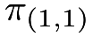 |
|
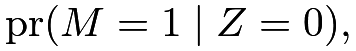 |
||
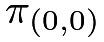 |
|
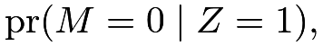 |
||
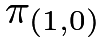 |
|
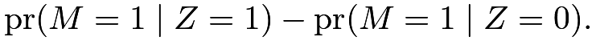 |
Our goal is to identify the survivor average causal effect . First, we can easily identify
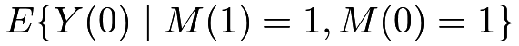
because the observed group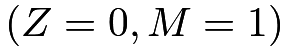
consists of only survivors: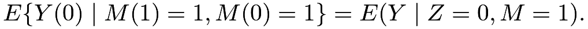 |
The key is then to identify
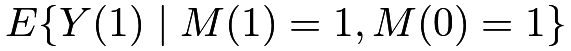
. The observed group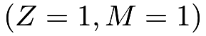
is a mixture of two strata and
and 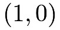
, therefore we have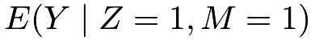 |
|
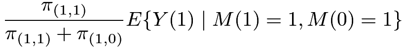 |
||
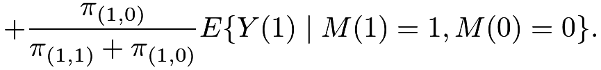 |
We have two unknown parameters but only one equation in (). So we cannot uniquely determine from the above equation (). Nevertheless, () contains some information about the quantity of interest. That is, is partially identified by Definition 18.1.
For a binary outcome , we know that is bounded between 0 and 1, and consequently, is bounded between the solutions to the following two equations:
|
||||
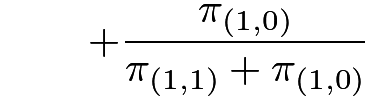 |
and
Therefore, has lower bound
and upper bound
We can then derive the bounds on , summarized in Theorem 26.1 below.


We can use Imbens and Manski, (2004)’s confidence interval for which involves two steps: first, we obtain the estimated lower and upper bounds with estimated standard errors ; second, we construct the confidence interval as , where is the  quantile of the standard Normal distribution. The validity of Imbens and Manski, (2004)’s confidence interval relies on some regularity conditions. In most truncation by death problems, those conditions hold because the lower and upper bounds are quite different, and they are bounded away from the extreme values
quantile of the standard Normal distribution. The validity of Imbens and Manski, (2004)’s confidence interval relies on some regularity conditions. In most truncation by death problems, those conditions hold because the lower and upper bounds are quite different, and they are bounded away from the extreme values  and
and  . I omit the technical details here.
. I omit the technical details here.
To summarize, this is a challenging problem since we cannot identify the parameter based on the observed data even with an infinite sample size. We can derive large-sample bounds for but the statistical inference based on the bounds is not standard. If we do not have monotonicity, the large-sample bounds have even more complex forms; see Zhang and Rubin, (2003) and Jiang et al., (2016, Appendix A).
135.2 An application
I use the data in Yang and Small, (2016) from the Acute Respiratory Distress Syndrome Network study which involves 861 patients with lung injury and acute respiratory distress syndrome. Patients were randomized to receive mechanical ventilation with either lower tidal volumes or traditional tidal volumes. The outcome is the binary indicator for whether patients could breathe without assistance by day 28. Table 11 summarizes the observed data.
Treatment  | |||
 |
 |
total | |
| 54 | 268 | 322 | |
| * | * | 109 | |
Control  | |||
|---|---|---|---|
|
|
total | |
| 59 | 218 | 277 | |
| * | * | 152 | |
We first obtain the point estimators of the latent strata:
|
||||
|
||||
|
The sample means of the outcome for surviving patients are
|
||||
|
The estimates for the bounds on are
so the bounds on are
Incorporating the sampling uncertainty based on the bootstrap, the confidence interval based on Imbens and Manski, (2004)’s method is , which covers 0.
135.3 Extensions
Zhang and Rubin, (2003) started the literature of large-sample bounds. Imai, 2008a () and Lee, (2009) were two follow-up papers. Cheng and Small, (2006) derived the bounds with multiple treatment arms. Yang and Small, (2016) used a secondary outcome and Yang and Ding, 2018a () used detailed survival information to sharpen the bounds on the survivor average causal effect.
136 Principal score method
Without additional assumptions, we can only derive bounds on the causal effects within principal strata, but cannot identify them in general. We must impose additional assumptions to achieve nonparametric identification of the ’s. There is no consensus on the choice of the assumptions. Those additional assumptions are not testable, and their plausibility depends on the application.
A line of research based on the principal score under the principal ignorability assumption parallels causal inference with unconfounded observational studies. For simplicity, I focus on the case with strong monotonicity.
136.1 Principal score method under strong monotonicity
Assumption 26.3 (strong monotonicity)
.
Similar to the ignorability assumption, we now assume the principal ignorability assumption.
Assumption 26.4 (principal ignorability)
We have
Assumption 26.4 implies that or, equivalently,
| (137) |
that is, and are mean independent (or uncorrelated) given .
Assumptions 26.1, 26.3 and 26.4 ensure nonparametric identification of the causal effects within principal strata, as summarized by Theorem 26.2 below.
Theorem 26.2
The conditional probability is called the principal score. Theorem 26.2 states that and can be identified by the difference in means with appropriate weights depending on the principal score.
Proof of Theorem 26.2:
I will only prove the result for .
We have
Moreover,
|
||||
|
||||
|
||||
|
||||
|
||||
|
||||
|
||||
|
I relegate the proof of the result for as Problem 26.1.

Theorem 26.2 motivates the following simple estimators for and , respectively:
- 1.
fit a logistic regression of
on using only data from the treated group to obtain ; - 2.
estimate
 by ;
by ; - 3.
obtain moment estimators:
and
- 4.
use the bootstrap to approximate the variances of and .
136.2 An example
The following function can compute the point estimates of and .
The following function can compute the point estimators as well as the bootstrap standard errors.
Revisit the data used in Chapter 107. Previously, we assumed exclusion restriction for the IV analysis. Now, we drop the exclusion restriction but assume principal ignorability. The results are below.
The point estimator does not differ much from the one based on the IV analysis. The point estimator is close to zero with a large standard error. In this example, exclusion restriction seems a reasonable assumption.
136.3 Extensions
Follmann, (2000), Hill et al., (2002), Jo and Stuart, (2009), Jo et al., (2011) and Stuart and Jo, (2015) started the literature of using the principal score to identify causal effects within principal strata. Ding and Lu, (2017) provided a theoretical foundation for this strategy. They proved Theorem 26.2 as well as a more general version under monotonicity; see Problem 26.2.
137 Other methods
To estimate principal stratification average causal effects without the exclusion restriction assumption, Zhang et al., (2009) proposed to use the Normal mixture models. However, the inference based on the Normal mixture models can be quite fragile. A strategy is to use additional information to improve the inference under some restrictions (Ding et al.,, 2011; Mealli and Pacini,, 2013; Mattei et al.,, 2013; Jiang et al.,, 2016).
Conceptually, the principal stratification framework works for general . A multi-valued generates many latent principal strata, and a continuous generates infinitely many latent principal strata. In those cases, identifying the probability of the principal strata is non-trivial in the first place let alone identifying the principal stratification average causal effects. Jiang and Ding, (2021) reviewed some useful strategies.
138 Homework problems
26.1 Complete the proof of Theorem 26.2
Prove the result for in Theorem 26.2.
26.2 Principal score method under monotonicity
This problem extends Theorem 26.2, with Assumption 26.3 replaced by Assumption 26.2 and Assumption 26.4 replaced by Assumption 26.5 below.
Assumption 26.5 (principal ignorability)
We have
and
Theorem 26.3
Remark: Based on Theorem 26.3, we can construct weighting estimators. Theorem 26.3 is Proposition 2 in Ding and Lu, (2017), which also provided more details for the estimation.
26.3 Principal score method in observational studies
This problem extends Theorem 26.2, with Assumption 26.1 replaced by the ignorability assumption below.
Assumption 26.6
Recall the definition of the propensity score  .
We have the following identification result.
.
We have the following identification result.
Theorem 26.4
Prove Theorem 26.4.
26.4 General principal score method
Remark: See Jiang et al., (2022).
26.5 Recommended reading
Frangakis and Rubin, (2002) proposed the principal stratification framework. Zhang and Rubin, (2003) derived large-sample bounds on the survivor average causal effect. Jiang and Ding, (2021) reviewed various strategies to identify the causal effects within principal strata. Jiang et al., (2022) gave a unified discussion of this strategy for observational studies and proposed multiply robust estimators for causal effects within principal strata.
脚注
51. Based on the causal diagrams, we can reach the same conclusion.
In Figure 42, even though by randomization of , conditioning on introduces the “collider bias” that causes .
52. Heckman won the Nobel prize of economics in 2000 “for his development of theory and methods for analyzing selective samples.”
His model contains two stages. First, the employment status is determined by a latent linear model
Second, the latent log wage is determined by a linear model
and is observed as  only if . In his two-stage model, the covariates
only if . In his two-stage model, the covariates  and may differ, and the errors are correlated bivariate Normal.
and may differ, and the errors are correlated bivariate Normal.